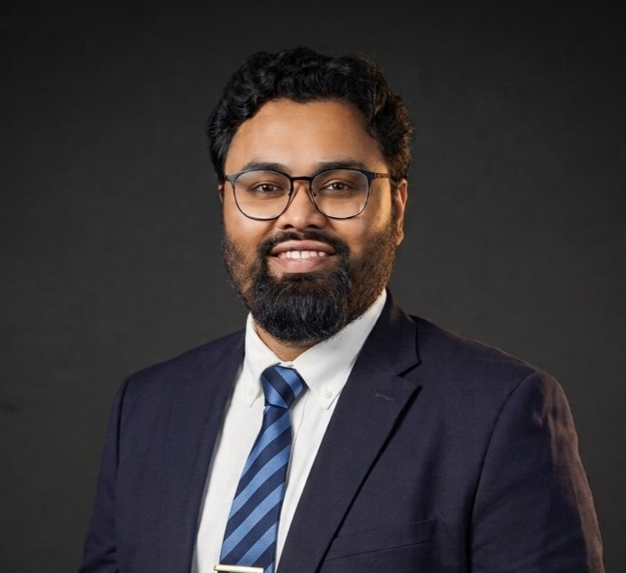

Gainesville, Florida · Dhaka, Bangladesh
Water shapes landscapes.
I study the change.
I’m Md Nurul Kadir—an agro-hydrologist, hydraulic modeler, agricultural engineer, educator, and researcher working across river deltas, estuaries, and water-resilient communities.

Hydrology · Geomorphology
Water resources · Education
outputs
citations*
& teaching
I connect physical processes with the decisions communities make around them.
My work combines field observations, numerical models, remote sensing, laboratory experiments, and engineering practice to understand how water and sediment systems respond to sea-level change, storms, river discharge, vegetation, agriculture, and human intervention.
Read the complete biography ↗03 / Research focus
Questions across connected systems.
Coastal & delta dynamics
Sea-level signals, bathymetric change, sediment pathways, and fluvio-deltaic evolution.
Explore →02Ecohydraulics & modeling
Coupled flow–vegetation systems, moving boundaries, hydrodynamics, and flood risk.
Explore →03Water resilience
Applied tools for agricultural water, river management, climate adaptation, and policy.
Explore →04 / Current research
Leading work where the seafloor meets risk.
NSF MACH · MorphoSurge research circle
Bathymetric change and water-level variation in estuaries
Developing and validating moving-boundary approaches that connect erosion, deposition, sea-level cycles, sediment supply, and storm-driven flood hazards—within the Megalopolitan Coastal Transformation Hub.
View projects ↗05 / Selected outputs
A research record from fields to deltas.
Research · collaboration · conversation